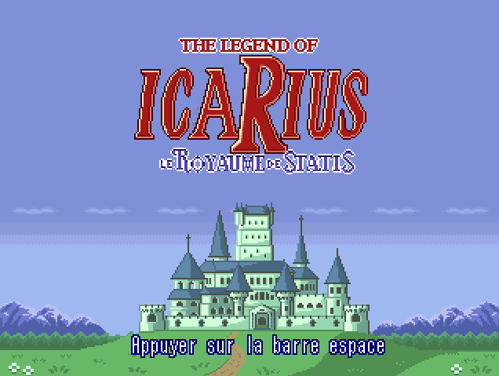
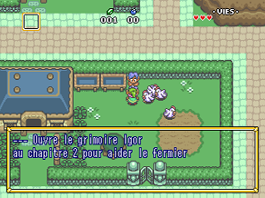
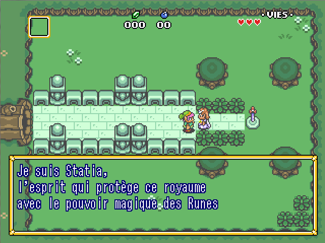
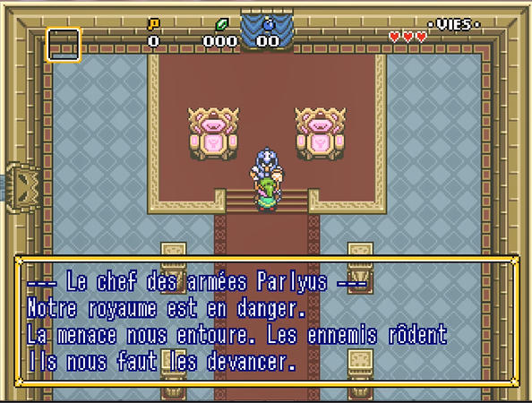

Funcamp R - Accueil
Soyez le/la bienvenu(e) au Funcamp R. Ce site rassemble l'ensemble des supports pédagogiques et ludiques relatifs à la formation que vous vous apprêtez à suivre. Pardon : cette page ouvre le grimoire IGoR, qui vous accompagnera dans l’épopée statistico-ludique dont vous êtes le héros / l’héroïne. Vous y trouverez, distillée au fur et à mesure des chapitres enluminés, toute la sagesse accumulée par ces mages qui, dans l’ombre, ont imaginé les épreuves que vous aurez à franchir.
 
Parcourir ce grimoire vous permettra d’apprendre, pas à pas, le langage des Runes, nécessaire pour aider le jeune icaRius, votre alter-ego numérique, à sauver le royaume de Statis de la menace qui le guette. Au cours de cette aventure, il vous sera ainsi demandé de résoudre des énigmes, dont la solution vous permettra d’avancer un peu plus loin dans les terres de Statis. Ces énigmes sont autant d’étapes pour découvrir les possibilités (magiques!) offertes par R. La solution sera ensuite à renseigner dans l’écran du jeu icaRius, prévu à cet effet.
Le Funcamp R s'adresse avant tout à celles et ceux qui, petits et grands débutants en R, souhaitent inscrire leur apprentissage dans une démarche amusante, où des phases de jeu et des phases de pratiques en R alternent. Il a été conçu pour les agents du système statistique public, qui retrouveront dans l'aventure d'icaRius quelques clins d'oeil à leur environnement professionnel - tous peuvent néanmoins s'essayer à ce parcours pédagogique, même sans travailler à l'Insee ou dans un service statistique ministériel. La composante dédiée aux techniques statistiques est délibèrement très restreinte : il s'agit surtout d'apprendre à maîtriser le cadre général de l'environnement R, d'autres formations plus avancées répondant aux besoins des statisticiens avertis.
Désireux de vous lancer dans l'aventure d'icaRius ? Consulter la page Jouer (et apprendre), qui vous présente les différentes façons d'accéder au jeu et aux tutoriels R.
 
Cet espace propose également, pour les esprits curieux, des informations complémentaires :
- la philosophie du projet, son histoire, ses acteurs... et son possible devenir !
- pour les formateurs, un espace dédié aux principes pédagogiques et à la présentation de la trame suivie.
- pour les développeurs, un ensemble de ressources pour contribuer au développement du grimoire de tutoriels R et du jeu icaRius.
- l'identité des auteurs de cette aventure : la présentation de l'équipe de conception du Funcamp R, et des acteurs qui nous ont aidés.